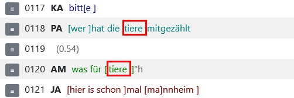
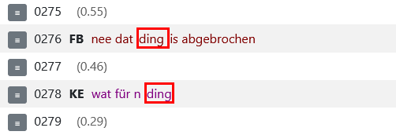

The "Repetition search" function described here allows you to search in the selected corpus for repetitions of a word token or a word token sequence you typed into the query input field. In the following, you can learn how to use Corpus Query Language (CQP) to specify what exactly you are looking for and how to configure the search properties when querying repetitions.
Content
One-word repetitions
Multi-word repetitions
Speaker contributions
Positional constraints
Metadata constraints
Search mode
Speaker
Distance
Speaker change
Distance to speaker change
Speaker overlap
Token order in multi-word repetitions
Repetition context
Multiple repetitions
1 Specifying what you are looking for
The green bordered text input field
is available for you to specify the element to be repeated. You can just type in a word (e.g. "genau") or a phrase (e.g. "ich weiß nicht") or alternatively use CQP-based query expressions to define more complex elements, e.g. that contain regular expressions, Precedence operators, specifications for parts of speech and/or speaker metadata constraints.
In what follows, you will find guidance and many examples on how to use CQP to search for one- and multi-word repetitions, for repetitions of whole speaker contributions as well as how to constrain the position and metadata scope of the element to be repeated.
To define a word token for the repetition search, you can apply all word token attributes (word, norm, lemma etc.) provided by the query language and use them individually or in combination. The following queries exemplify various possibilities for searching one-word repetitions:
Please avoid using query expressions looking for undefined values like [lemma=".*"]. Such kind of queries would take too long and will eventually be aborted due to the time constraints for server connections.
If required, you can use Boolean expressions ('&' for 'AND', '|' for 'OR' and '!' for 'NOT') and Precedence operators ('followedby' and 'precedeby') to describe the element you are looking for in more detail. The query below combines 'followedby' with the negation operator '!' to find noun repetitions, but to exclude the cases where the noun is followed by a proper name like "frau X ... frau Y" or "herr X ... herr Y":
When searching repetitions, please consider the difference between the following queries. The first one will match repetitions of nouns that follow an adjective. The second one will match repetitions of two-word sequences consisting of an adjective and a noun.
[pos="NN"] precededby [pos="ADJA"] returns hits like nach dieser (.) theoretischen einheit dann (0.58) die praktische einheit (.) (FOLK_E_00001_SE_01_T_02).
[pos="ADJA"][pos="NN"] returns hits like eine erfolgreiche ausbildung zu (0.66) erfolgreiche ausbildung (FOLK_E_00004_SE_01_T_01).
When searching for multi-word repetitions, please put each token inside its own pair of square brackets as demonstrated by the following query looking for noun phrase repetitions of type 'article (ART) + adjective (ADJA) + noun (NN)':
It is also possible to specify a certain distance between individual tokens. This is exemplified by the next query looking for repetitions of grammatical constructions of the type 'auxiliary verb (VAFIN) + predicate adjective (ADJD)'. Up to 2 tokens can occur here between the verb and the adjective, cf. e.g. bisch and jung in the excerpt du bisch jo noch jung ne du bisch jo noch jung (FOLK_E_00020_SE_01_T_01).
By speaker contributions we mean here segments corresponding to a contiguous stretch of speech of a single speaker terminated either by a silence of more than 0.2 seconds or by a speaker change. In the corpora available in ZuRecht, speaker contributions are represented by <annotationBlock>-elements, in which the spoken language transcripts in the ISO-TEI format are divided. Feel free to use an <annotationBlock>-element in your query to search for repetitions of speaker contributions as demonstrated by the following queries:
To refer to the beginning and the end of a speaker contribution, <annotationBlock> and </annotationBlock>-elements may be used in the query expression. The following two queries are equivalent and look for repetitions of all transcribed forms of 'Entschuldigung' at the beginning of a speaker contribution:
If you only want to examine repetitions in certain conversation types (e.g. only in telephone conversations) or in the utterances realized by specific speakers (e.g. only by female speakers), then you can use the "within" and "!within" operators to constrain the query metadata scope. Some examples:
2 Repetition properties
Various search options are available to you when searching for repetitions. For example, you can set the distance between the element to be repeted and its repetition, decide whether the speaker should repeat themselves or be repeated by another speaker, specify the context of the repetition element etc. All these options can be configured in the form for repetition properties (located below the green bordered query input field):
In the following, each setting is explained in detail and provided with an example.
In the "Search mode" menu, you can choose the method how repetitions should be identified:
The same transcription means that tokens and
token sequences are compared to each other based on their transcribed forms.
Only if their transcribed forms are equal, it can be a repetition.
Example: If you search [norm="weiß"] and set the search mode
to "same transcription", then only "weiß" and "weiß"
or "weeß" and "weeß" will be identified as a repetition, but not "weiß" and "weeß".
The same normalized form means that tokens and
token sequences are compared to each other based on their normalized forms.
Only if their normalized forms are equal, it can be a repetition.
Example: If you search [norm="weiß"] and set the search mode
to "same normalized form", then "weeß"
will also be identified as a repetition of "weiß"
and "weiß" as a repetition of "weeß",
because they have the same normalized form "weiß".
The same lemma means that tokens and
token sequences are compared to each other based on their lemmas.
Only if their lemmatized forms are equal, it can be a repetition.
Example: If you search [norm="weiß"] and set the search mode
to "same lemma", "wusste"
will be found as a repetition of "weiß"
because both have the same lemma "wissen".
If you search [norm="weiß"] and set the search mode to "same lemma", "wusste" will be found as a repetition of "weiß" but not vice versa because [norm="weiß"] in the query input field matches all transcribed forms of "weiß" but not of "wusste".
To match all forms of "wissen" you should search [lemma="wissen"] and combine it with the "same lemma"-option in the "Search mode". In this case you will get, for example, "wusste" as a repetition of "weiß" and "weiß" as a repetition of "wusste".
Depending on how you combine the search query with the search mode,
you can search for different repetition types. Here are some more examples:
(1) If you search [word="weiß"] and set the search mode
to "same transcription", then only "weiß" and "weiß"
will be identified as a repetition. If you switch to the search mode
"same normalized form", then both "weiß" and "weiß" and
"weiß" and "weeß" will be returned as a repetition.
("weeß" and "weeß" or "weeß" and "weiß"
will not be matched because [word="weiß"] looks only for the form "weiß".)
Setting the search mode to "same lemma"
returns all possible repetition types of the form "weiß",
for example: "weiß" and "weiß",
"weiß" and "weeß", "weiß" and "wusste".
(2) If you search [lemma="wissen"] and set the search mode
to "same transcription", the following repetitions will be returned:
"weiß" and "weiß", "weeß" and "weeß"
"wusste" and "wusste", "wissen" and "wissen".
If you change the search mode to "same normalized form" also
"weiß" and "weeß" as well as "weeß" and "weiß"
will be identified as repetitions. Switching to "same lemma"
will return all types of repetitions for all forms of "wissen".
If you only want to find cases in which the speaker repeats themselves, you should select the option "same" in the "Speaker" drop-down list:
On the other hand, the option "other" will only find cases where the speaker is repeated by another speaker. If the option "other" is selected, you can additionally specify the metadata for the second speaker, e.g. their gender or their native language. To use the help of the query builder for speaker metadata just enter "<" in the text input field.
Only in the "Speaker metadata" text input field, you can use logical operators "|" und "&" to define more complex patterns for specifying the speaker producing the repetition, e.g.
<s_geschlecht="Weiblich"/> & <s_berufe="Schüler/in (Gymnasium)"/>
<s_geschlecht="Männlich"/> & (<ses_rolle_s="Tutor/in"/> | <ses_rolle_s="Lehrer/in"/>)
The default distance between both parts of the repetition construction (i.e. between the element you are looking for and its repetition) is a minimum of 0 and a maximum of 5 word tokens. You can change that, up to a maximum of 20 tokens.
Furthermore, you can select parts of speech which should be ignored when measuring the distance of repetitions. To do this, you need to click the down arrow of the "ignore selected parts of speech"-option.
If you search passages where speakers repeat themselves, you should select "same" in the "Speaker" drop down list. In this case an additional select element will be displayed to you where you can specify if you wish a speaker change between the element you are looking for and its repetition if both are realized by the same speaker.
For example, selecting „required“ for „Speaker Change” allows you to find same-speaker repetitions after a repair-initiation of another speaker like in the following excerpt from FOLK_E_00004_SE_01_T_02:
The option "preceded by" in the "Distance to speaker change" menu does not make sense if "not allowed" is selected for "Speaker change"!
The "Distance to speaker change" - option allows you to specify at what distance from a previous/following speaker change should the repetition be found. If you don't need this option just leave the value "undefined":
If you want to find a repetition that occurs directly before a speaker change, select "followed by" in the drop down menu and type '0' and '0' for min. and max. word tokens:
This configuration can be used, for example, when searching repetitions of a trouble source that was produced by another speaker before and – after the other-repetition – is immediately repaired. Please consider that the option "other" in the "Speaker"-menu should be selected in this case. The following transcript excerpt from FOLK_E_0007_SE_01_T_01 gives you an example for this search:
If you select 'preceded by' in the drop down menu and type '0' and '0' for min. and max. word tokens,
you will get repetitions occurring immediately after a speaker change like in the following example from FOLK_E_00001_SE_01_T_02, in which the repetition serves as a confirmation in third position after a question-answer-sequence:
For efficiency reasons, the distance to speaker change can be set to a minimum of 0 and a maximum of 5 word tokens.
When configuring the repetition properties you also have the possibility to specify whether the repetition should occur within or outside of a speaker overlap:
This option can be useful, e.g., when you want to find only those repetitions that occur outside of overlaps because these examples are better suited for further phonetic and prosodic analyses. Alternatively you can use this option to search for reduplications within speaker overlaps, e.g. to obtain the right to speak or in the case of reduplicated reception signals like in the following excerpt from FOLK_E_00006_SE_01_T_02:
If you look for repetitions of muti-word expressions, you can decide whether the token order of this expression should be fixed or can vary. For example, if you look for repetitions of the verb "sein" in combination with an adjective, choosing the last option will also return repetitions in the form of a subordinate clause, e.g. nee das is digital ich denk dass es digital is (FOLK_E_00119_SE_01_T_01).
Sometimes when searching for repetitions you might want to find special constructions like German "X - Was für X?" or "X - Was ist (denn ein) X?". In ZuRecht, it is possible by using the "Context (left)" and "Context (right)" features. They allow you to apply CQP for specifying patterns of elements immediately preceding or following the repetition. For example, if you look for nouns and type [norm="was"][norm="für"][ ]{0,1} into the context left input field

you will get hits like the following transcript excerpts:
|  |  |
| (FOLK_E_00132_SE_01_T_13) | (FOLK_E_00202_SE_01_T_03) |
The CQP pattern specified in the context input field matches the elements IMMEDIATELY preceding or following the repetition. If you want to allow some pauses or other verbal or non-verbal elements occurring in-between, you can use empty square brackets and specify how many such elements are allowed.
In the example above, we applied [ ]{0,1} to allow zero or one token between the specified context 'was für' and the repetition itself. That is why wat für n ding that contains an undefinite article n was matched.
Additionally, you can check the checkbox
to limit the results only to those where the wanted context and the repetition itself are from the same contribution. This can be useful when the distance between the context and the repetition is set too generous.
The function allowing to specify the right context of repetitions can also be used to find repetitions directly or at a certain distance from pauses or other paraverbal events. The distance can be specified with [ ]{n,m} in the context input field, e.g. <pause/>[ ]{0,3}. This will find all repetition elements following a pause with a distance of a minimum of 0 and a maximum of 3 tokens. Example: "basisseite vom transischtor (0.27 ) welschen transistor bitte" (FOLK_E_00001_SE_01_T_01).
Please consider the difference between the following pairs of repetition context patterns:
[pos="ART"] matches repetitions immediately preceded by an article.
[!pos="ART"] matches repetitions not immediately preceded by an article.
[pos="ART"][ ] matches repetitions preceded by an article with a distance of one token between the article and the repetition.
[!pos="ART"][ ] matches repetitions preceded by two tokens, the first of which is not an article.
[pos="ART"][ ]{0,2} matches repetitions preceded by at least one article with a maximum distance of two tokens between the article and the repetition.
[!pos="ART"][ ]{0,2} matches repetitions that are preceded by at least one token that is not an article with a maximum distance of two tokens between it and the repetition.
[pos="ART"]{3} matches repetitions immediately preceded by three articles.
[!pos="ART"]{3} matches repetitions preceded by three tokens, none of which is an article.
At the bottom of the form for specifying repetition properties,
a link "specify settings for a second repetition of the element" is located.
Clicking on this link opens another form that looks exactly like the first one and can be used
to specify the properties of the second repetition when
searching for an element repeated at least twice.
Below you will find two examples of such multiple repetitions.
Example 1:
If you type [pos="NN"] into the query input field and select the following settings,
you will find the transcript excerpts where a speaker produces a repetition in combination with "was für", e.g. in order to get more precise information about the object mentioned before by the first speaker. The first speaker then provides an explanation and repeats the object again himself.
The options "same" and "other" in the "Speaker" drop-down list in the specification of the second repetition refer to the first speaker, i.e. the speaker of the element you are looking for in the green bordered query input field (NOT the speaker of the first repetition!)
Example 2:
The query [pos="NN"] within <s_geschlecht="Weiblich"/>
in combination with the following repetition settings
will return transcript excerpts where one element produced by a female speaker is repeated by a male speaker and then she repeats it herself again. In the following example, a male speaker corrects his female interlocutor within an other-repetition. The female speaker in turn objects and in her contribution repeats the crucial element again.
Even if you have not specified any settings for the second repetition, but the appropriate form is open, the program automatically searches for multiple repetitions using default settings. If you want to search for contributions with at least one repetition, please close the second form by clicking on the link "delete the second repetition specification".